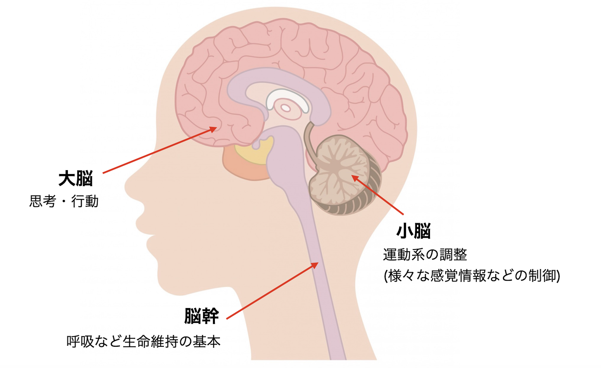
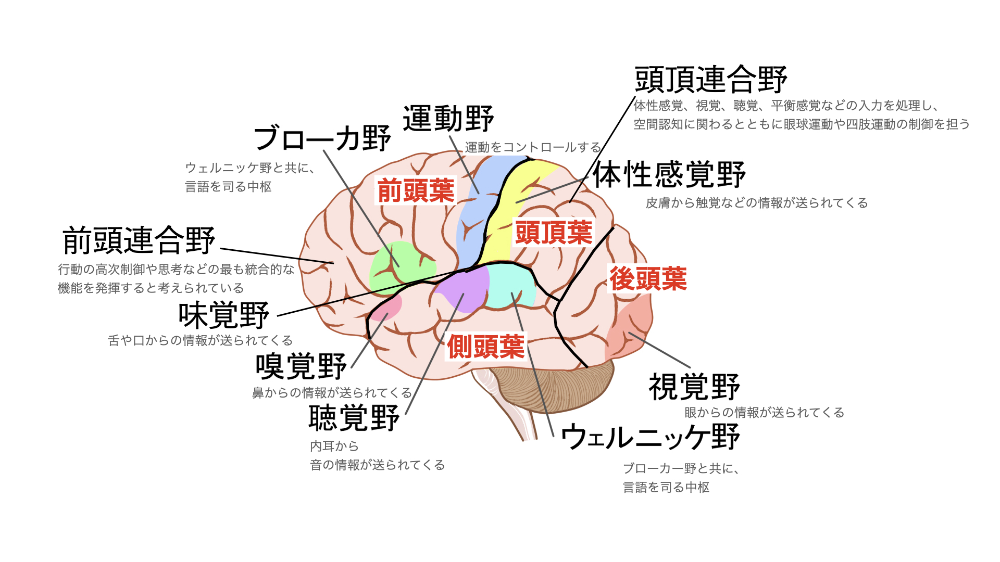
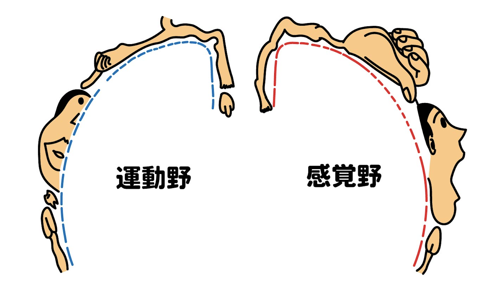
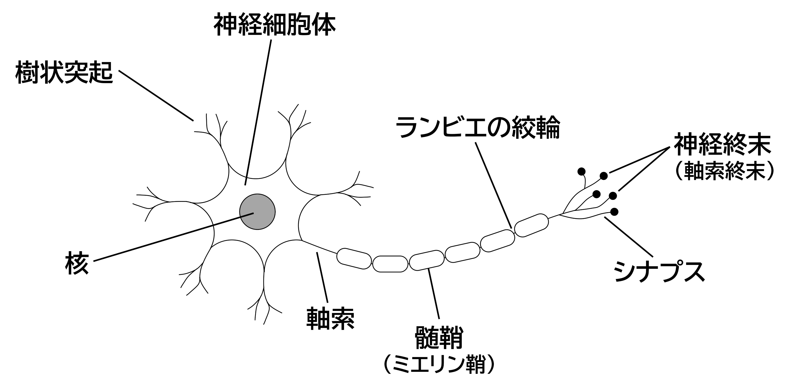
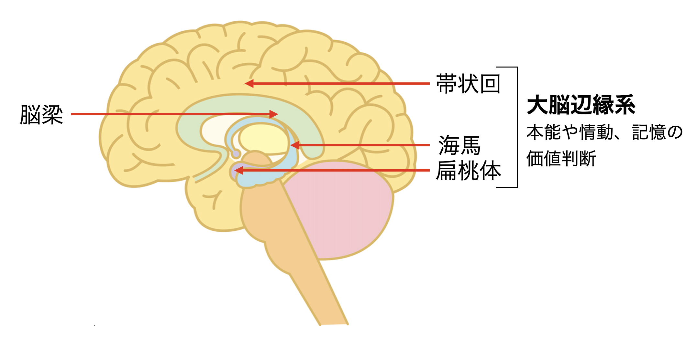
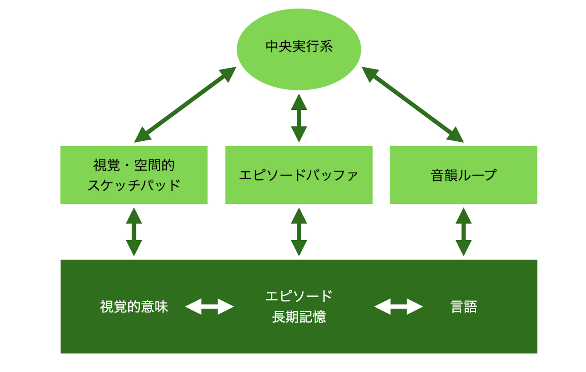

脳についての基礎知識
はじめに
前提として、人体の中でも、脳のはたらきについては、その多くがまだ解明されていません。それは、脳には1,000億個もの神経細胞がつながりあって大きなネットワークを作っているからです。
脳は大別すると、大脳、小脳、脳幹という３つの部分で構成されています。
大脳は、ヒトの脳の大部分を占め、人間としての思考と行動を司っています。大脳の後側（後頭葉）の下部には小脳があり、運動系の統合的な調節を行っています。脳の中心部には脳幹があり、意識・呼吸・循環など生命維持に必要な機能を司っています。
かつては、脳の特定の領域が特定の機能を担っている（局在）という考え方が中心でした。近年の脳科学では、基本的な役割は一つの領域が担うというよりも、中心となる複数の部分が共同したネットワークとして機能しているという考え方に変わってきています。
大脳の働き
大脳は、ヒトの脳の大部分を占めています。大脳半球の表面の大部分は新皮質で占められています。大脳皮質は、しわしわに折りたたまれており、とくに大きなしわを境界に、「前頭葉」「後頭葉」「頭頂葉」「側頭葉」の領域に区別されます。
大脳の新皮質は、運動や感覚を受け持つ働きや、意識や思考などの高次の精神活動を営む働きをしています。
ブロードマン(Korbinian Brodmann)は、大脳皮質を47領域に分け、大脳地図を作成しました(ブロードマンの脳地図として有名です)。
前頭野・前頭連合野
前頭葉は、名前のとおり大脳の前部に位置し、前頭連合野、運動野などを含んでいます。
さまざまな「コントロール」には、前頭連合野が関与しています。最も有名な前頭連合野損傷患者は、フィネアス・ゲージ(Phineas Gage)です。ゲージは19世紀、アメリカで鉄道建設の現場監督をしていましたが、建設現場で火薬の爆発事故があり、爆風で吹き飛ばされた鉄の棒がゲージの左頬から額を突き抜けたのです。治療により一命をとりとめましたが、人格が一変してしまいました。事故以前は有能な現場監督だったのですが、事故後は気まぐれで下品、怒りっぽく移り気で、物事を計画的に進めることができなくなっていました。彼のような患者の例から、前頭葉の重要な役割が明らかになってきたのです。前頭連合野は、脳の司令塔といってもよいでしょう。
運動野と感覚野の地図
ペンフィールド(Wilder Graves Penfield)は、脳外科手術の際の患者の観察から、脳の体性感覚野と、運動野にはそれぞれ特定の身体部位に反応する場所があることを発見しました。それを表したのが体部位再現地図です。頭頂部から側頭部に向けて、身体の各部に対応する神経細胞が並んでいます。感覚の鋭敏な部分は、大きな場所を占めていることがわかります。
右脳と左脳
脳は、基本的に左右対称な構造をしています。しかし、右半球（右脳）と左半球（左脳）で異なった役割を果たしています。
左脳は言語、秩序だった論理的な思考、記号や言語などを使って物事を一般化して考えるといった、抽象的な思考に優先的にかかわることが多いです。右利きの人のほとんど、左利きの人の多くで左半球が言語を担っています。利き手に関係なく95%以上の人は、文法、語彙、音素集合、音声生成において、左半球に依存しています。左脳は右半身の機能を、右脳は左半身の機能を担っています。右目や右手から入った情報は、左脳で処理されます。事故や病気で右半球が損傷すると左半身にマヒが生じますが、左半球が損傷すると右半身のマヒだけでなく失語症が生じます。ウェルニッケ野を損傷すると、「ウェルニッケ失語」といって、話し言葉や書き言葉の意味がわからなくなります。ブローカ野を損傷すると、相手の言っていることは理解できるのに話すことができなくなる「ブローカ失語」になります。
一方右脳は、視空間的（映像的・音楽的）情報処理を担っていて、メロディーを把握する能力、空間認知能力、思いつき的な思考、個々の具体的な物や事がらについての思考に優先的にかかわることが多いです。
脳には入ったさまざまな情報は、脳梁（左脳と右脳をつなぐ領域）（下図参照）によって、左右それぞれに伝達されます。
胎児期には、脳の発達のしかたには左右差があり、左脳は右脳のあとから発達するのではないかといわれています。さらに男性の場合、胎児期に、男性ホルモンであるテストステロンが左脳の発達を遅らせる場合があるのではないか、という説もあります。
高次脳機能と脳内ネットワーク
高次脳機能（言語や行為、知覚、認知、記憶、注意、判断、情動など大脳で営まれる様々な機能）には、連合野が重要な役割を果たしています。連合野は、大脳皮質内で互いに連合して機能を行う領域で、頭頂連合野、側頭連合野、前頭連合野の3つがあります。上図に記載がない側頭連合野は、視覚認知、聴覚認知、記憶などの機能を担っています。
近年の脳科学の発展により、高次の機能は脳の一部が担うというよりも、複数の部位が連携してネットワークとして機能することがわかってきました。ネットワークの一つにデフォルトネットワークがあります。これは集中していないOFF状態のときに活動しています。一方で、集中している時に活動しているのが中央実行ネットワークです。報酬系も、発達障害に関連するネットワークの一つです。報酬系は、ある欲求が満たされた時に活発になる脳内ネットワークで、ADHDでは、報酬系の問題が行動のコントロールに影響していると考えられています（詳細はこちら）。
神経細胞
ヒトの脳の中には、1,000億の神経細胞があるといわれています。神経細胞の本体である神経細胞体からは、細長い突起が何本も出ています。神経細胞はこの突起を使ってほかの神経細胞と接続し、信号をやり取りしています。神経細胞の突起は2種類あります。信号の送り手となる軸索と、信号の受け手となる樹状突起です。通常、軸索は、一つの神経細胞に1本しかありません。
細胞体から出た1本の軸索は、時に枝分かれしながらほかの神経細胞の樹状突起につながります。このつなぎ目は、シナプスとよばれています。ただし、神経細胞どうしは、直接つながっているわけではありません。神経細胞と神経細胞の間には、非常にわずかなすきまが存在しているのです。そのすきまを、シナプス間隙といいます。その距離は、20〜40ナノメートル（1ナノは100万分の1ミリ）ほどです。シナプス間隙では、神経伝達物質という化学物質を相手に渡して信号を伝えます。神経細胞と神経細胞の間での信号の伝わり方は「電気信号→化学信号→電気信号」という形をとります。
多くの軸索にはミエリン鞘といわれる細胞が巻きついています。ミエリン鞘は電気を通さない絶縁体で、電気的な信号はミエリン鞘の節目から節目へ伝わっていきます。信号の伝道速度は最大で1秒間に100メートルにも達します。
神経細胞の軸索は、何本にも枝分かれしています。枝分かれの先端にはそれぞれシナプスがあり、ほかの神経細胞とつながっています。脳内に1,000億個以上存在するといわれる神経細胞は、それぞれが100個から10万個のシナプスをもっています。神経細胞はたがいにシナプスでつながり合いながら、想像を絶するほど複雑なネットワークをつくっていることになります。
神経細胞が樹状突起で受け取った電気信号は、そのまま軸索へ伝えられるわけではありません。伝えられた電気信号は、神経細胞体でたし合わされるのです。そしてある一定量をこえると、神経細胞の電気的活動が爆発的に高まり、このときにはじめて、軸索へと電気信号が送り出されます。この信号は、軸索先端のシナプスで繋がっているすべての神経細胞に伝えられます。
大脳辺縁系
大脳辺縁系は、大脳の奥深くに存在します。領域は研究者によってとらえ方が異なりますが、大まかにいって、扁桃体、海馬、帯状回などを指すと考えてよいでしょう。大脳辺縁系は古皮質（原始的な脳）であり、情動、価値判断、記憶の中枢です。
記憶
海馬は、学習、記憶と深い関係があり、記憶をつくるときに重要なはたらきをします。海馬には、脳のさまざまな領域から視覚や嗅覚などの情報が集められます。そして最終的に、記憶は大脳皮質に書き込まれると考えられています。
海馬が破壊されると、新しい出来事が覚えられなくなる「順行性健忘」という症状が出ます。しかし、古い記憶そのものは残っているのです。次のような話があります。あるてんかんの患者が27歳のときに左右両側の海馬を手術でとりのぞかれました。その結果、食べた食事のメニューなど、新しく経験した出来事を記憶できなくなってしまったのです。このことから、海馬は、たくさんの経験の中から記憶する必要のあるものを選ぶ機能を果たしていると考えられます。
記憶は海馬で選択され、側頭葉に保存されるのです。海馬は、記憶の読み出しにも一時的に使われています。ただし一定期間（最大で数か月程度）がすぎれば、海馬の助けがなくても、大脳皮質にある記憶を読みだせるようになります。
記憶する前と後では、ネットワークに変化がおきると考えられています。神経細胞のつなぎ目であるシナプスは、大きくなって情報伝達の効率が上がったり、つながり方が変わったりすることがあります。また、新たにシナプスができたり、なくなったりすることもあります。このようなシナプスの変化によって、神経細胞のネットワークが変わり、それが維持されることが、記憶をつくるしくみの一つだと考えられています。
情動
扁桃体は情動に深くかかわっています。扁桃体は、視覚や聴覚などの感覚情報と、側頭連合野や前頭連合野からの入力を受け取ります。扁桃体のニューロンが、自分にとって意味のある物体や事象によく反応します。たとえば悲惨な事故を目撃して恐怖や悲しみを感じたり、おいしそうなケーキを見て喜んだりしたときです。このことから、扁桃体は意味づけに関係すると考えられています。
扁桃体は受け取った信号を、過去の似たような経験と自動的に照らし合わせている（評価している）と考えられています。実際に過去に経験した事故はもちろん、見聞きした事故や、昔食べたケーキが美味しかった経験などと照らし合わせているのです。そうした評価にもとづいて、脳幹などの領域へ電気信号を送り、手に汗をかくような体内の変化や、食べようという行動を引きおこすのです。
また、扁桃体は条件づけに対して重要な役割を果たしていると考えられています。ラットやマウスに、音を聞かせると同時に電気ショックを与え続けると、やがて音を聞いただけで、電気ショックを受けたのと同様に、フリージング（すくみ）や、血圧・心拍数の上昇を示すようになります。これを条件性恐怖反応といい、扁桃体が関与しています。
左右の脳に一つずつある扁桃体がはたらかなくなってしまう、ウルバッハ・ビーテ病の患者は、人の恐怖の表情を読み取ることができません。ウルバッハ・ビーテ病はとてもめずらしい病気で、これまでに400例ほどしか報告されていません。最もよく知られている患者は、1994年に報告された女性（当時30歳前後）で、そのコードネームを「SM」といいます。SM氏は、恐怖を感じることがむずかしいため、危険を察知できず、社会生活に困難をかかえていたといいます。たとえば、街中などでナイフを突きつけられたことが少なくとも2度あり、銃を突きつけられたことも2度あるそうです。
SM氏を含む、扁桃体を損傷した患者らについての研究の結果、両側の扁桃体を損傷した人は、他人の恐怖の表情から恐怖を読み取れないことがわかりました。一方で、恐怖以外の表情を読み取ることはでき、一般的な知能や言語能力は損傷のない場合と変わりませんでした。
2020年本屋大賞翻訳小説部門第1位となった「アーモンド」という小説は、扁桃体の異常がある少年の成長の物語です。
大脳基底核
大脳皮質と脳幹を結びつける神経核が集まっているところを大脳基底核とよんでいます。大脳基底核は運動の調整や学習など、さまざまな機能をもっています。どの構造までを大脳基底核と定義するかは研究者によって異なります。
代表的な器官は線条体です。この器官は次の三つの機能に関係しているといわれています。一つは運動機能です。もう一つは主に意思決定の機能や記憶する機能、物事を遂行する機能などがあります。最後は、意欲や情動を調整する機能です。
ワーキングメモリ
ワーキングメモリは、記憶のひとつです。短期記憶に関して、わたしたちが何か目的をもって思考するとき、必要な情報を一時的に記憶にとどめたり、過去の記憶の中から必要なものを参照したり、といった「動的な記憶」をワーキングメモリといいます（研究者によってはワーキングメモリを短期記憶とすることもあります）。
ワーキングメモリの機能は、大脳の3割を占める前頭連合野という領域が担っているとされます。ワーキングメモリは作業記憶とも呼ばれます。外界から入ってくる情報や過去の記憶から、次の行動に必要なものを取捨選択して、行動を決めます。実際の行動を担当するのは、複雑な身体運動を制御する運動野です。この領域に、ワーキングメモリを介して情報が伝達されます。次にワーキングメモリは、行動の動機づけをするために、情報を司っている大脳辺縁系に情報を伝達します。このように前頭連合野にあるワーキングメモリは、脳全体を制御する司令塔としての役割を果たしています。
ワーキングメモリは、いくつかの要素で構成されていると考えられています。もっとも有名なのはBaddeleyのモデルで、視覚および空間的な情報は「視覚・空間的スケッチパッド」が、聴覚的な情報は「音韻ループ」が機能します。音韻ループは言語的短期記憶とも言い換えられるように、言語情報の保持と処理も行います。また、必要に応じて過去の記憶と照合する「エピソードバッファ」もあります。すべてをコントロールするのが「中央実行系」です。
小脳の働き
小脳(cerebellum)は、運動系の統合的な調節を行っています。小脳が障害されると、運動失調症(ataxia)や平衡障害、筋緊張障害などが起こります。たとえば、人さし指で鼻の先をさすという動きをしようとしても、指がふるえたり、さす場所がずれたりしてうまくできません。指先の動きを予測しながら微調整するはたらきが、そこなわれているからです。
実行機能
私たちは毎日、さまざまな活動を「実行」しています。例えば旅行の計画を立てる場面を想像してみてください。自分と同行者の予定や希望を考慮し、日程や行先を計画し、さまざまなことを決定していくことになるでしょう。また、時には予定どおりにいかず感情的になることがあるかもしれませんが、目的のためには自分の感情をコントロールすることも必要です。このように「考慮」「計画」「決定」「コントロール」といった細かいプロセスを重ねて旅行の計画を「実行」していくことになるわけですが、この「実行」にかかわる脳の機能を「実行機能」といいます。
「実行機能」については多くの研究があり、研究者によって定義も異なりますが、「目標を達成するために、思考、行動、情動を制御する能力」という定義がわかりやすいでしょう。具体的にどんな機能を実行機能としてとらえるかという点についても研究者によって異なりますが、実行機能を評価する検査のひとつであるBRIEF-2(Behavior Rating Inventory of Executive Function、Second Edition)では、「抑制」「切り替え（セットシフティング）」「計画/整理（プランニング）」「ワーキングメモリ」「感情調整」「課題達成」「自己モニター」という7つの側面で実行機能をとらえています。